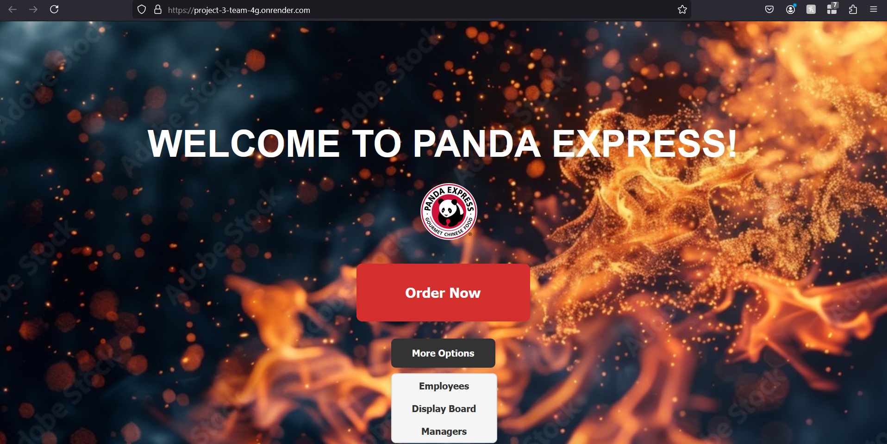
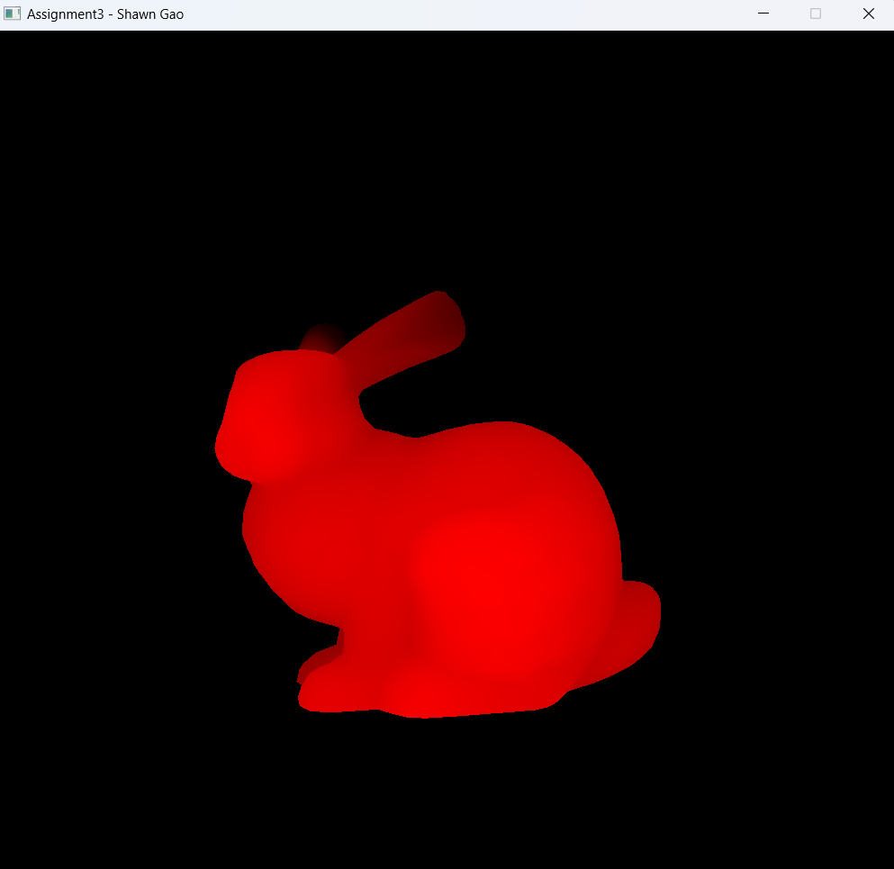
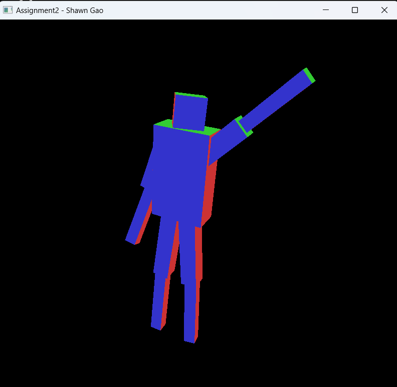
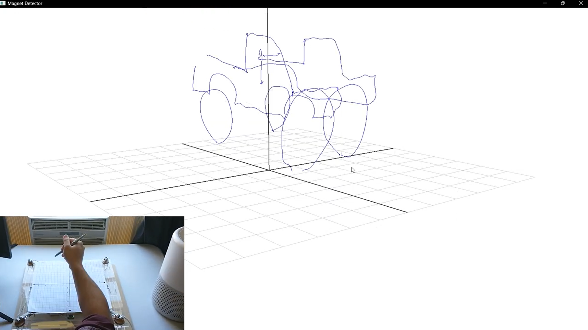
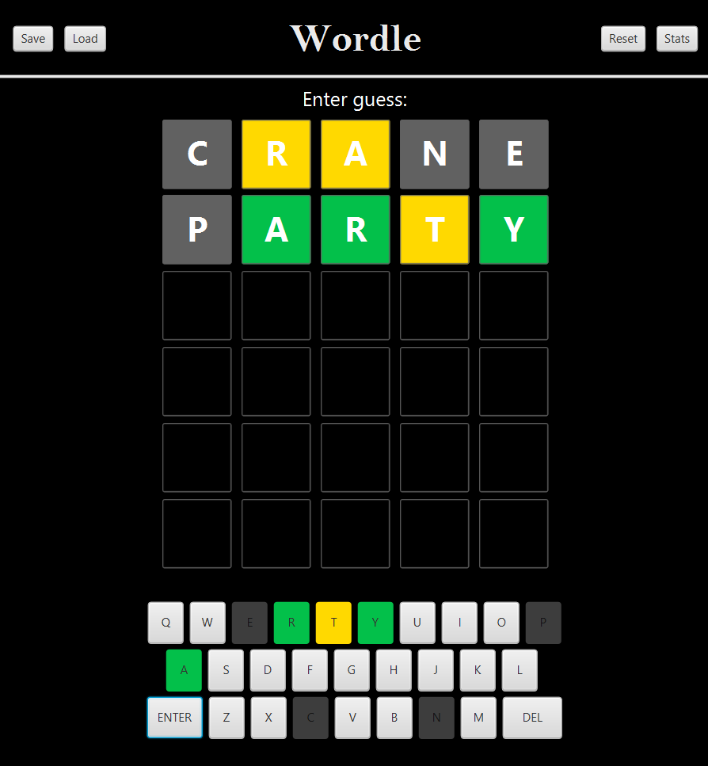
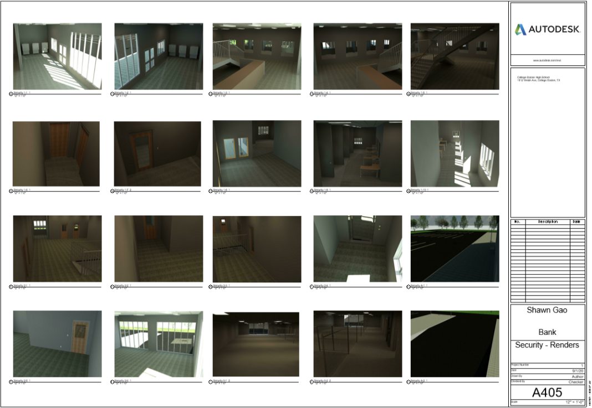

Shawn Gao
Texas A&M University
shawng3884@gmail.com



JavaScript, HTML, CSS, C++, PostgreSQL, Node.JS
For this project, we created a modified POS system for Panda Express. We designed and created both the manager and customer views, initialy through JavaFX and later moving onto a JavaScript website hosted on Render, as well a database that would store information about orders, employees, and inventory. We also integrated queries into our front-end GUI, so that managers can see trends in sales and order history. We wrote scripts to generate about a million dollars and a year's worth of sales that populated the database. Throughout the whole process, we followed the Agile development methodology.

OpenGL
This project was one of a series in my Computer Graphics class, which had me implement my own rasterizer on CPU with three different coloring modes, and using barycentric coordinates. I had the oppurtunity to work with OpenGL to implement my own z-buffer as well as a clipping algorithm to display different objects.

OpenGL
This project was one of a series in my Computer Graphics class, and it had me model a basic robot in OpenGL that could be transformed by a user. I used matrix stacks to create hierarchical transformations, where connected parts of the robot would move together. In the end, I put everything together with an animation of the robot running.

C++, Python
In this research project, we created a platform that performs magnet tracking on a stylus, estimating its position and orientation over time. The stylus can move freely through 3D space, and does not need an external power source.
Currently, I am working on using the stylus system to detect a user's specific pattern as they sign into a system and recognize their movements using machine learning. The result would be a kinesthetic signature that is unique to each person, even if they are punching the same code into the same keypad as another person who is authorized. This feature could also be used for handwriting verification, since having another dimension of space for a signature, as well as the time and orientation data of the pen as it travels, would better prevent forgery.

Java
For my CSCE314 Final Project, I created a Wordle clone. The game includes a responsive GUI made using JavaFX and no other plugins, displaying a window for a Wordle board as well a window for game statistics. The word is randomly retrieved from a file containing all 5-letter words in the English language.
The game data is automatically tracked and saved to a local file between rounds, and is also saved after each guess, so that a single game can be loaded later and played continuously throughout sessions.

Autodesk Revit, Autodesk AutoCAD
For an Architectural Drafting competition, I designed and modeled a mid-sized branch of a national bank. The completed project included site, floor, and roof plans, as well as electrical, plumbing, door, and window schedules.
One main aspect I focused on was the accessibility of various areas for different groups of people: customers, employees, and security. Since it was a commercial building, I had to research ADA guidelines and alter my design in order to conform to those standards.
Throughout the project, I had to learn many aspects of architectural design as well as Autodesk Revit 2019, a drafting and modeling software. At the end, I created a scale model of the building using plastic sheets and foam. The project won a Superior award at the state conference.

Texas A&M University
shawng3884@gmail.com